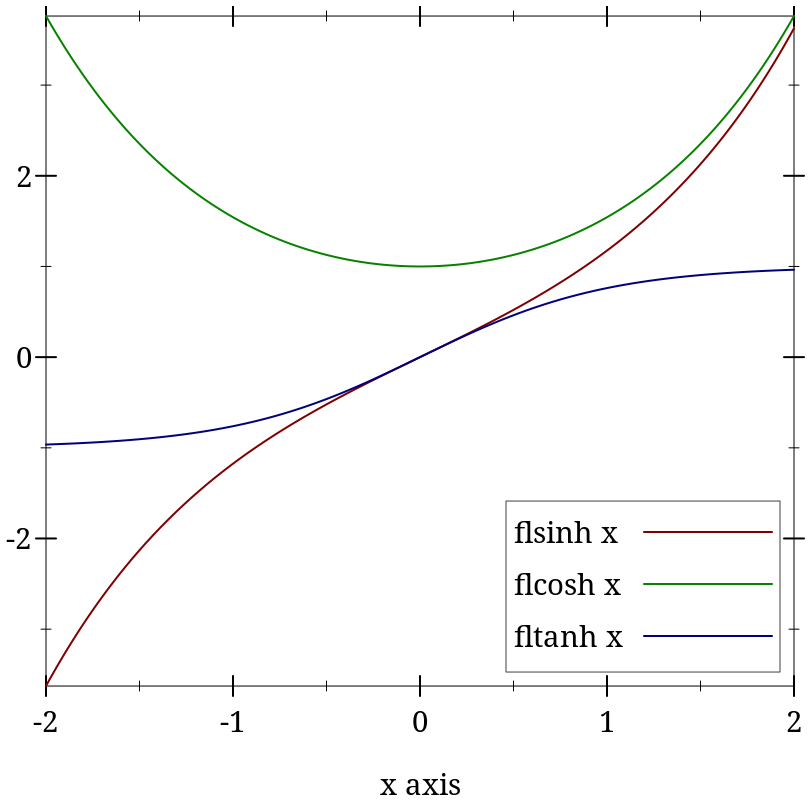
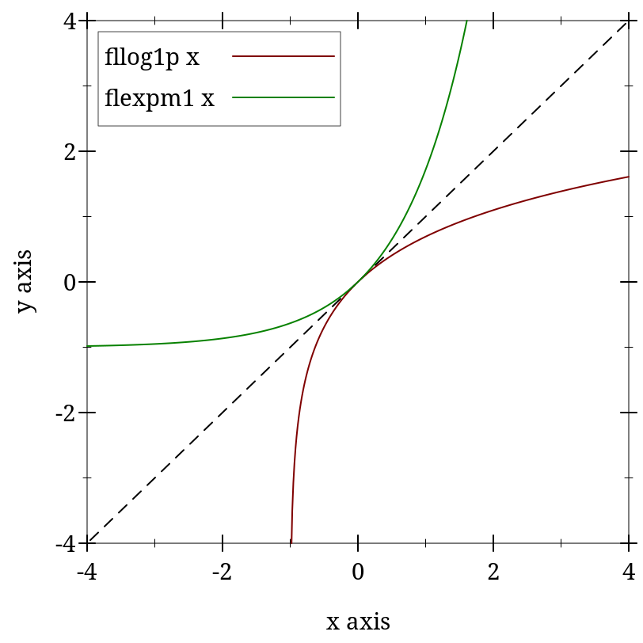
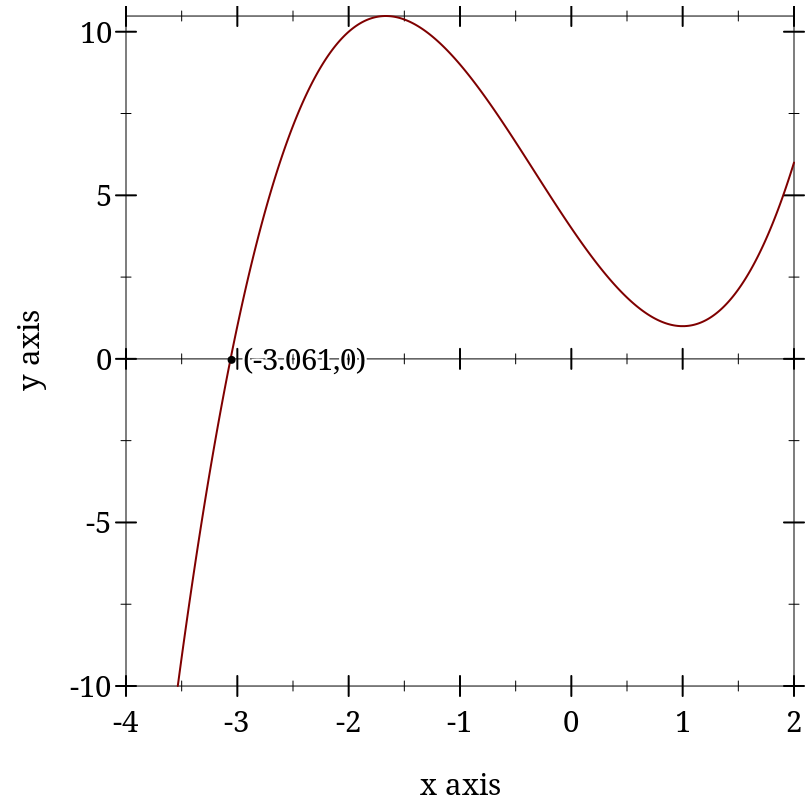
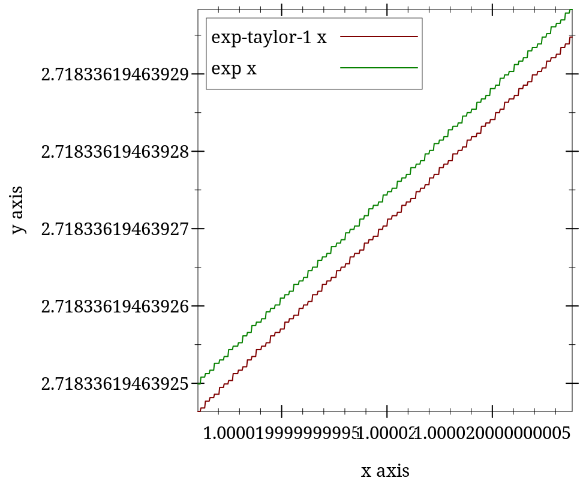
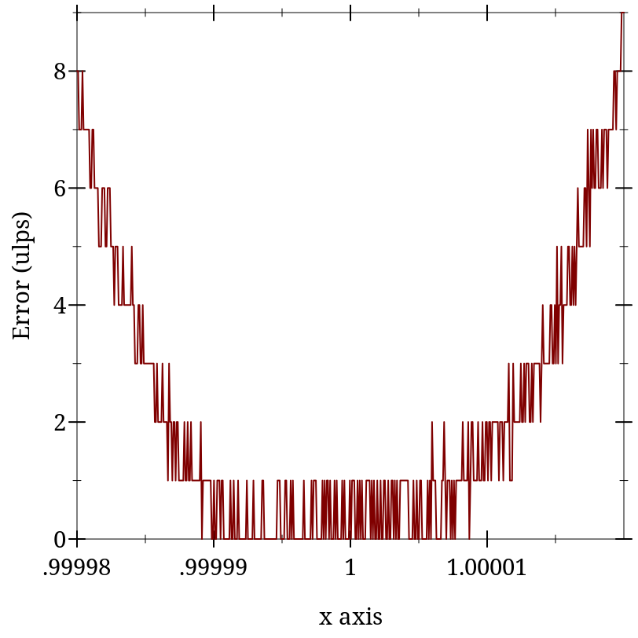

2 Flonums
| (require math/flonum) | package： math-lib |
For convenience, math/flonum re-exports racket/flonum as well as providing the functions document below.
2.1 Additional Flonum Functions
> (exact->inexact 0.5f0) 0.5f0
> (flabs (exact->inexact 0.5f0)) flabs: contract violation
expected: flonum?
given: 0.5f0
函数
(flrational? x) → Boolean
x : Flonum
函数
(flinfinite? x) → Boolean
x : Flonum
函数
x : Flonum
函数
(flinteger? x) → Boolean
x : Flonum
Worst-case time complexity is O(n2), though the pathological inputs needed to observe quadratic time are exponentially improbable and are hard to generate purposely. Expected time complexity is O(n log(n)).
See flvector-sums for a variant that computes all the partial sums in xs.
> (plot (list (function (compose flsinh fl) #:label "flsinh x") (function (compose flcosh fl) #:label "flcosh x" #:color 2) (function (compose fltanh fl) #:label "fltanh x" #:color 3)) #:x-min -2 #:x-max 2 #:y-label #f #:legend-anchor 'bottom-right) 
Maximum observed error is 2 ulps, making these functions (currently) much more accurate than their racket/math counterparts. They also return sensible values on the largest possible domain.
These functions are as robust and accurate as their corresponding inverses.
函数
(flfactorial n) → Flonum
n : Flonum
函数
(flbinomial n k) → Flonum
n : Flonum k : Flonum
函数
(flpermutations n k) → Flonum
n : Flonum k : Flonum
函数
(flmultinomial n ks) → Flonum
n : Flonum ks : (Listof Flonum)
For factorial-like functions that return sensible values for non-integers, see gamma and beta.
函数
(fllog-factorial n) → Flonum
n : Flonum
函数
(fllog-binomial n k) → Flonum
n : Flonum k : Flonum
函数
(fllog-permutations n k) → Flonum
n : Flonum k : Flonum
函数
(fllog-multinomial n ks) → Flonum
n : Flonum ks : (Listof Flonum)
For log-factorial-like functions that return sensible values for non-integers, see log-gamma and log-beta.
> (fllog (+ 1.0 1e-14)) 9.992007221626358e-15
> (fllog1p 1e-14) 9.99999999999995e-15
> (- (flexp 1e-14) 1.0) 9.992007221626409e-15
> (flexpm1 1e-14) 1.0000000000000049e-14
> (plot (list (function (λ (x) x) #:color 0 #:style 'long-dash) (function (compose fllog1p fl) #:label "fllog1p x") (function (compose flexpm1 fl) #:label "flexpm1 x" #:color 2)) #:x-min -4 #:x-max 4 #:y-min -4 #:y-max 4) 
Many flonum functions defined in terms of fllog and flexp become much more accurate when their defining expressions are put in terms of fllog1p and flexpm1. The functions exported by this module and by math/special-functions use them extensively.
> (- 1.0 1e-20) 1.0
函数
(flexp2 x) → Nonnegative-Flonum
x : Flonum
Maximum observed error is 2.1 ulps, but is usually less than 0.7 (i.e. near rounding error).
Case
Condition
Value
(fllogb b 1.0)
0.0
(fllogb 1.0 x)
+nan.0
(fllogb b x)
+nan.0
Double limits
(fllogb 0.0 0.0)
+inf.0
(fllogb 0.0 +inf.0)
-inf.0
(fllogb +inf.0 0.0)
-inf.0
(fllogb +inf.0 +inf.0)
+inf.0
Limits with respect to b
(fllogb 0.0 x)
x < 1.0
0.0
(fllogb 0.0 x)
x > 1.0
-0.0
(fllogb +inf.0 x)
x > 1.0
0.0
(fllogb +inf.0 x)
x < 1.0
-0.0
Limits with respect to x
(fllogb b 0.0)
b < 1.0
+inf.0
(fllogb b 0.0)
b > 1.0
-inf.0
(fllogb b +inf.0)
b > 1.0
+inf.0
(fllogb b +inf.0)
b < 1.0
-inf.0
For example, consider (fllogb 0.0 0.0). Taking an interated limit, we get ∞ if the outer limit is with respect to x, or 0 if the outer limit is with respect to b. This would normally mean (fllogb 0.0 0.0) = +nan.0.
> (define (f x) (+ 1.0 (* (+ x 3.0) (sqr (- x 1.0))))) > (define x0 (flbracketed-root f -4.0 2.0))
> (plot (list (x-axis) (function f -4 2) (function-label f x0)) #:y-min -10) 
> (f (flprev x0)) -7.105427357601002e-15
> (f x0) 6.661338147750939e-16
> (flbracketed-root f -1.0 2.0) +nan.0
There is no guarantee that flbracketed-root will find any particular root. Moreover, future updates to its implementation could make it find different ones.
There is currently no guarantee that it will find the closest x to an exact root.
It currently runs for at most 5000 iterations.
函数
(make-flexpt x) → (Flonum -> Flonum)
x : Real
> (bf-precision 128) > (define y 150.0) > (define pi^y (bigfloat->rational (bfexpt pi.bf (bf y)))) > (flulp-error (flexpt pi y) pi^y) 43.12619934359266
> (define flexppi (make-flexpt (bigfloat->rational pi.bf))) > (flulp-error (flexppi y) pi^y) 0.8738006564073412
函数
(flsqrt1pm1 x) → Flonum
x : Flonum
2.2 Log-Space Arithmetic
It is often useful, especially when working with probabilities and probability densities, to represent nonnegative numbers in log space, or as the natural logs of their true values. Generally, the reason is that the smallest positive flonum is too large.
> (require math/distributions) > (pdf (normal-dist) 50.0) 0.0
> (pdf (normal-dist) 50.0 #t) -1250.9189385332047
In log space, exponentiation becomes multiplication, multiplication becomes addition, and addition becomes tricky. See lg+ and lgsum for solutions.
When logy > logx, lg- returns +nan.0. Both functions correctly treat -inf.0 as log-space 0.0.
To add more than two log-space numbers with the same guarantees, use lgsum.
> (lg+ (fllog 0.5) (fllog 0.2)) -0.35667494393873234
> (flexp (lg+ (fllog 0.5) (fllog 0.2))) 0.7000000000000001
> (lg- (fllog 0.5) (fllog 0.2)) -1.203972804325936
> (flexp (lg- (fllog 0.5) (fllog 0.2))) 0.30000000000000004
> (lg- (fllog 0.2) (fllog 0.5)) +nan.0
Though more accurate than a naive implementation, both functions are prone to catastrophic cancellation in regions where they output a value close to 0.0 (or log-space 1.0). While these outputs have high relative error, their absolute error is very low, and when exponentiated, nearly have just rounding error. Further, catastrophic cancellation is unavoidable when logx and logy themselves have error, which is by far the common case.
These are, of course, excuses—
函数
(flprobability? x [log?]) → Boolean
x : Flonum log? : Any = #f
> (flprobability? -0.1) #f
> (flprobability? 0.5) #t
> (flprobability? +nan.0 #t) #f
2.3 Debugging Flonum Functions
The following functions and constants are useful in authoring and debugging flonum functions that must be accurate on the largest possible domain.
> (plot (list (function exp-taylor-1 #:label "exp-taylor-1 x") (function exp #:color 2 #:label "exp x")) #:x-min (flstep 1.00002 -40) #:x-max (flstep 1.00002 40) #:width 480) 
> (plot (function (λ (x) (flulp-error (exp-taylor-1 x) (exp x)))) #:x-min 0.99998 #:x-max 1.00002 #:y-label "Error (ulps)") 
To get a ground-truth function such as exp to test against, compute the outputs as accurately as possible using exact rationals or high-precision bigfloats.
2.3.1 Measuring Floating-Point Error
函数
(flulp-error x r) → Flonum
x : Flonum r : Real
For non-rational arguments such as +nan.0, flulp-error returns 0.0 if (eqv? x r); otherwise it returns +inf.0.
A flonum function with maximum error 0.5 ulps exhibits only rounding error; it is correct. A flonum function with maximum error no greater than a few ulps is accurate. Most moderately complicated flonum functions, when implemented directly, seem to have over a hundred thousand ulps maximum error.
> (flulp-error 0.5 1/2) 0.0
> (flulp-error 0.14285714285714285 1/7) 0.2857142857142857
> (flulp-error +inf.0 +inf.0) 0.0
> (flulp-error +inf.0 +nan.0) +inf.0
> (flulp-error 1e-20 0.0) +inf.0
> (flulp-error (- 1.0 (fl 4999999/5000000)) 1/5000000) 217271.6580864
See relative-error for a similar way to measure approximation error when the approximation is not necessarily represented by a flonum.
2.3.2 Flonum Constants
(define (newton-sqrt x) (let loop ([y (* 0.5 x)]) (define dy (/ (- x (sqr y)) (* 2.0 y))) (if ((abs dy) . <= . (abs (* 0.5 epsilon.0 y))) (+ y dy) (loop (+ y dy)))))
Approximation error is often understood in terms of relative error in epsilons. Number of epsilons relative error roughly corresponds with error in ulps, except when the approximation is subnormal.
2.3.3 Low-Level Flonum Operations
函数
(flonum->bit-field x) → Natural
x : Flonum
> (number->string (flonum->bit-field -inf.0) 16) "fff0000000000000"
> (number->string (flonum->bit-field +inf.0) 16) "7ff0000000000000"
> (number->string (flonum->bit-field -0.0) 16) "8000000000000000"
> (number->string (flonum->bit-field 0.0) 16) "0"
> (number->string (flonum->bit-field -1.0) 16) "bff0000000000000"
> (number->string (flonum->bit-field 1.0) 16) "3ff0000000000000"
> (number->string (flonum->bit-field +nan.0) 16) "7ff8000000000000"
函数
(bit-field->flonum i) → Flonum
i : Integer
函数
(flonum->ordinal x) → Integer
x : Flonum
> (flonum->ordinal -inf.0) -9218868437227405312
> (flonum->ordinal +inf.0) 9218868437227405312
> (flonum->ordinal -0.0) 0
> (flonum->ordinal 0.0) 0
> (flonum->ordinal -1.0) -4607182418800017408
> (flonum->ordinal 1.0) 4607182418800017408
> (flonum->ordinal +nan.0) 9221120237041090560
函数
(ordinal->flonum i) → Flonum
i : Integer
函数
(flonums-between x y) → Integer
x : Flonum y : Flonum
> (flonums-between 0.0 1.0) 4607182418800017408
> (flonums-between 1.0 2.0) 4503599627370496
> (flonums-between 2.0 3.0) 2251799813685248
> (flonums-between 1.0 +inf.0) 4611686018427387904
函数
(flsubnormal? x) → Boolean
x : Flonum
Though flonum operations on subnormal numbers are still often implemented by software exception handling, the situation is improving. Robust flonum functions should handle subnormal inputs correctly, and reduce error in outputs as close to zero ulps as possible.
> +max-subnormal.0 2.225073858507201e-308
2.4 Double-Double Operations
For extra precision, floating-point computations may use two nonoverlapping flonums to represent a single number. Such pairs are often called double-double numbers. The exact sum of the pair is the number it represents. (Because they are nonoverlapping, the floating-point sum is equal to the largest.)
For speed, especially with arithmetic operations, there is no data type for double-double numbers. They are always unboxed: given as two arguments, and received as two values. In both cases, the number with higher magnitude is first.
Inputs are never checked to ensure they are sorted and nonoverlapping, but outputs are guaranteed to be sorted and nonoverlapping if inputs are.
> (fl 1/7) 0.14285714285714285
> (relative-error (fl 1/7) 1/7) 5.551115123125783e-17
> (define-values (x2 x1) (fl2 1/7)) > (list x2 x1) '(0.14285714285714285 7.93016446160826e-18)
> (fl (relative-error (+ (inexact->exact x2) (inexact->exact x1)) 1/7)) 3.0814879110195774e-33
If x is not rational, fl2 returns (values x 0.0).
> (define-values (x2 x1) (fl2 1/7)) > (fl2->real x2 x1) 46359793379775246683308002939465/324518553658426726783156020576256
> (define-values (x2 x1) (fl2 1/7)) > (fl2? x2 x1) #t
> (fl2? 0.14285714285714285 0.07692307692307693) #f
> (fl2? +inf.0 0.0001) #f
This function is quite slow, so it is used only for testing.
函数
x : Flonum y : Flonum
函数
x : Flonum y : Flonum
函数
x : Flonum y : Flonum
函数
x : Flonum y : Flonum
函数
(flsqr/error x) → (Values Flonum Flonum)
x : Flonum
函数
(flsqrt/error x) → (Values Flonum Flonum)
x : Flonum
函数
(flexp/error x) → (Values Flonum Flonum)
x : Flonum
函数
(flexpm1/error x) → (Values Flonum Flonum)
x : Flonum
Use these functions to generate double-double numbers directly from the results of floating-point operations.
> (define x1 (fl 1/7)) > (define x2 (fl 1/13)) > (define z* (bigfloat->real (bfexp (bf* (bf x1) (bf x2))))) > (relative-error (flexp (fl* x1 x2)) z*) 9.755408946378402e-17
> (let*-values ([(y2 y1) (fl*/error x1 x2)] [(z2 z1) (fl2exp y2 y1)]) (fl (relative-error (fl2->real z2 z1) z*))) 4.890426935548821e-33
For flexp/error and flexpm1/error, the largest observed error is 3 ulps. (See fl2ulp.) For the rest, the largest observed error is 0.5 ulps.
函数
x2 : Flonum x1 : Flonum
函数
(fl2rational? x2 x1) → Boolean
x2 : Flonum x1 : Flonum
函数
(fl2positive? x2 x1) → Boolean
x2 : Flonum x1 : Flonum
函数
(fl2negative? x2 x1) → Boolean
x2 : Flonum x1 : Flonum
函数
(fl2infinite? x2 x1) → Boolean
x2 : Flonum x1 : Flonum
函数
x2 : Flonum x1 : Flonum
函数
x2 : Flonum x1 : Flonum y2 : Flonum y1 : Flonum = 0.0
函数
x2 : Flonum x1 : Flonum y2 : Flonum y1 : Flonum = 0.0
函数
x2 : Flonum x1 : Flonum y2 : Flonum y1 : Flonum = 0.0
函数
x2 : Flonum x1 : Flonum y2 : Flonum y1 : Flonum = 0.0
函数
x2 : Flonum x1 : Flonum = 0.0
函数
x2 : Flonum x1 : Flonum = 0.0
函数
x2 : Flonum x1 : Flonum = 0.0
For arithmetic, error is less than 8 ulps. (See fl2ulp.) For fl2sqr and fl2sqrt, error is less than 1 ulp, and fl2abs is exact.
函数
x2 : Flonum x1 : Flonum y2 : Flonum y1 : Flonum
函数
x2 : Flonum x1 : Flonum y2 : Flonum y1 : Flonum
函数
x2 : Flonum x1 : Flonum y2 : Flonum y1 : Flonum
函数
x2 : Flonum x1 : Flonum y2 : Flonum y1 : Flonum
函数
x2 : Flonum x1 : Flonum y2 : Flonum y1 : Flonum
函数
x2 : Flonum x1 : Flonum
函数
x2 : Flonum x1 : Flonum
函数
x2 : Flonum x1 : Flonum
函数
x2 : Flonum x1 : Flonum
For fl2exp and fl2expm1, error is less than 3 ulps. (See fl2ulp.) For fl2log and fl2log1p, error is less than 2 ulps.
2.4.1 Debugging Double-Double Functions
The unit in last place of a double-double is that of the higher-order of the pair, shifted 52 bits right.
> (fl2ulp 1.0 0.0) 4.930380657631324e-32
> (let-values ([(x2 x1) (fl2 1/7)]) (fl2ulp-error x2 x1 1/7)) 0.07142857142857142
> +max-subnormal.0 2.225073858507201e-308
> +max-subnormal.hi 1.0020841800044864e-292
2.4.2 Low-Level Double-Double Operations
The following syntactic forms are fast versions of functions like fl+/error. They are fast because they make assumptions about the magnitudes of and relationships between their arguments, and do not handle non-rational double-double flonums properly.
语法
(fast-mono-fl+/error x y)
语法
(fast-mono-fl-/error x y)
语法
(fast-fl+/error x y)
语法
(fast-fl-/error x y)
语法
(fast-fl*/error x y)
语法
(fast-fl//error x y)
语法
(fast-flsqr/error x)
语法
(flsplit x)
Used to implement double-double multiplication.
2.5 Additional Flonum Vector Functions
> (build-flvector 10 fl) (flvector 0.0 1.0 2.0 3.0 4.0 5.0 6.0 7.0 8.0 9.0)
语法
(inline-build-flvector n proc)
n : Integer
proc : (Index -> Flonum)
函数
(flvector-map proc xs xss ...) → FlVector
proc : (Flonum Flonum ... -> Flonum) xs : FlVector xss : FlVector
The proc is meant to accept the same number of arguments as the number of its following flonum vector arguments. However, a current limitation in Typed Racket requires proc to accept any number of arguments. To map a single-arity function such as fl+ over the corresponding number of flonum vectors, for now, use inline-flvector-map.
语法
(inline-flvector-map proc xs xss ...)
proc : (Flonum Flonum ... -> Flonum)
xs : FlVector
xss : FlVector
函数
(flvector-copy! dest dest-start src [ src-start src-end]) → Void dest : FlVector dest-start : Integer src : FlVector src-start : Integer = 0 src-end : Integer = (flvector-length src)
函数
(list->flvector vs) → FlVector
vs : (Listof Real)
函数
(flvector->list xs) → (Listof Flonum)
xs : FlVector
函数
(vector->flvector vs) → FlVector
vs : (Vectorof Real)
函数
(flvector->vector xs) → (Vectorof Flonum)
xs : FlVector
函数
xs : FlVector ys : FlVector
函数
xs : FlVector ys : FlVector
函数
xs : FlVector (flvector- xs ys) → FlVector xs : FlVector ys : FlVector
函数
xs : FlVector (flvector/ xs ys) → FlVector xs : FlVector ys : FlVector
函数
(flvector-scale xs y) → FlVector
xs : FlVector y : Flonum
函数
(flvector-abs xs) → FlVector
xs : FlVector
函数
(flvector-sqr xs) → FlVector
xs : FlVector
函数
(flvector-sqrt xs) → FlVector
xs : FlVector
函数
(flvector-min xs ys) → FlVector
xs : FlVector ys : FlVector
函数
(flvector-max xs ys) → FlVector
xs : FlVector ys : FlVector
函数
(flvector-sum xs) → Flonum
xs : FlVector
函数
(flvector-sums xs) → FlVector
xs : FlVector
> (flvector-sums (flvector 1.0 1e-16 1e-16 1e-16 1e-16 1e+100 -1e+100))
(flvector
1.0
1.0
1.0000000000000002
1.0000000000000002
1.0000000000000004
1e+100
1.0000000000000004)